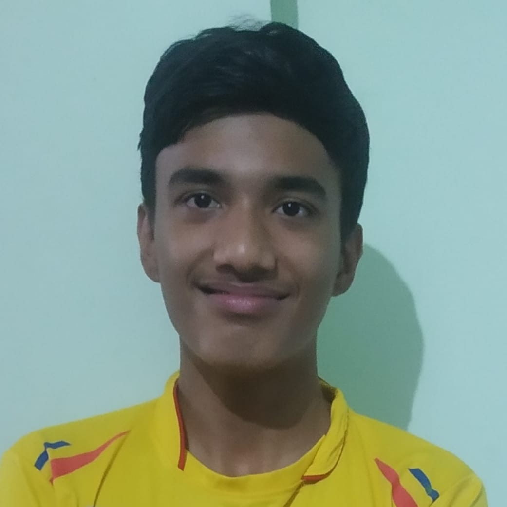
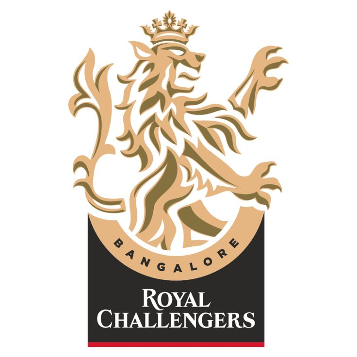
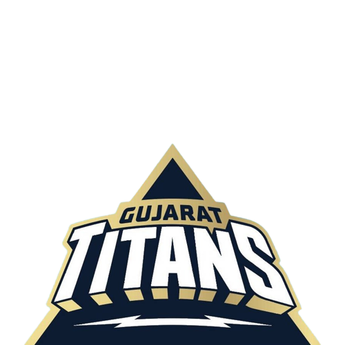

CSK beat RR by 12 runs! CSK skipper Ritesh Tripathy became the
first wicketkeeper to take 3 catches in a match.
KVCricInfo | 17 Jul

MI beat LSG by 3 wickets! MI bowlers completely dominated the
game. Stopped LSG at a low score of 23.
KVCricInfo | 15 Jul
Rishikesh Tripathy bowled the first maiden over of the IPL.
Creates History in the match between MI and LSG.
KVCricInfo | 15 Jul
LSG captain changed yet again! Now, Vicky Kumar to captain LSG for
this IPL.
KVCricInfo | 15 Jul
RCB beat RR in a thrilling match by 1 run. Happened second time in
the history of IPL. Credit goes to Vicky for his bowling.
KVCricInfo | 13 Jul

GT beat MI in a thrilling match by 1 run on account of Aditya's 17
runs and Harshit's economical bowling spell.
KVCricInfo | 6 Jul

"Wednesday match will be very crucial and tough for us. But MI
will win" says MI skipper Rishikesh on the to-be-continued match
between MI and GT.
KVCricInfo | 5 Jul
Two matches between CSK and LSG and RCB and RR postponed due to
football tournament in the stadium.
KVCricInfo | 3 Jul
Arnav Bhargava stepped down from captaincy! Nishant to be the new
captain of Lucknow Super Giants.
KVCricInfo | 29 Jun